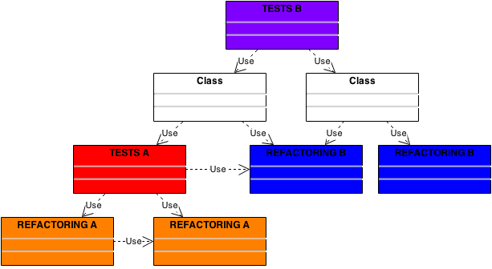

<!doctype html>
<html lang="en">

	<head>
		<meta charset="utf-8">

		<title>TDD / BDD</title>

		<meta name="description" content="A course on TDD, BDD and automated testing in general - patterns, principles and guidelines">
		<meta name="author" content="Wojciech Zawistowski">

		<meta name="apple-mobile-web-app-capable" content="yes" />
		<meta name="apple-mobile-web-app-status-bar-style" content="black-translucent" />

		<meta name="viewport" content="width=device-width, initial-scale=1.0, maximum-scale=1.0, user-scalable=no">

		<link rel="stylesheet" href="css/reveal.min.css">
		<link rel="stylesheet" href="css/theme/default.css" id="theme">

		<!-- For syntax highlighting -->
		<link rel="stylesheet" href="lib/css/zenburn.css">

		<!--[if lt IE 9]>
		<script src="lib/js/html5shiv.js"></script>
		<![endif]-->
	</head>

	<body>

		<div class="reveal">

			<!-- Any section element inside of this container is displayed as a slide -->
			<div class="slides">
                <section data-markdown data-separator="^\n---\n$" data-vertical="^\n--\n$">
<script type="text/template">
#TDD / BDD

###Principles, patterns and guidelines

<small>by Wojciech Zawistowski</small>

---

#part 1

###basics

---

##Types of tests

- end-to-end (e2e)
- unit
- integration

---

##e2e

- treat system as a black box<br><small>(no "manual" DB reads / writes!)</small>
- slow and harder to debug<br><small>(should test only main paths, not edge cases)</small>
- goal: ensure correct "wiring"<br><small>(no mocks, production-like configuration)</small>

---

##unit

- test small, autonomous units<br><small>(typically single class)</small>
- partially white box<br><small>(black box unit internals, white box unit API and interactions)</small>
- fast and easy to debug<br><small>(should test edge cases)</small>
- goal: maximum isolation<br><small>(don't test unit dependencies - stub them)</small>

---

##unit & e2e = complementary

- they serve different purpose<br><small>(it's not a stylistic choice)</small>
- both types should be used together<br><small>(otherwise test suite cannot be fully trusted)</small>

---

##integration

- test connections with 3rd party code<br><small>(e.g. file system, database, web service, library)</small>
- easy to debug but slow<br><small>(use where necessary, but minimize their number)</small>
- may or may not test edge cases<br><small>(depends on your knowledge and trust in 3rd party service)</small>
- goal: test single integration point<br><small>(shouldn't test the whole system or business logic)</small>

---

##when to write tests

after the code

vs

before the code (TDD)

---

##tests after the code

- prevent regression in future<br><small>(tests will tell us if new feature breaks the old code)</small>
- difficult to write<br><small>(code design may turn out to be untestable)</small>
- time consuming<br><small>(we test twice: manually when coding and via test suite)</small>

---

##TDD

- enables emergent design<br><small>(experiments and refactoring during coding are easy)</small>
- enforces better design<br><small>(low coupling, easier to use APIs, code easy to modify)</small>
- easier to write tests<br><small>(design supports testing from the start)</small>
- less time consuming<br><small>(no manual testing when coding)</small>

---

##two "flavors"

"classic" TDD

vs

Behavior Driven Development (BDD)

---

##TDD

- focused on functionality<br><small>(tests usually organized per API method)</small>
- higher code coverage<br><small>(may potentially cover more edge cases)</small>
- bloated, redundant code and tests<br><small>(we test - and thus code - everything we can)</small>

---

##BDD

- focused on specification<br><small>(tests usually organized per feature)</small>
- better requirements coverage<br><small>(tests are clearer about the purpose of the code)</small>
- works great as a live documentation<br><small>(tests cover real usage scenarios)</small>
- no unnecessary code<br><small>(we test - and thus code - only real business needs)</small>

---

##similar e2e tests "flavors"

- functional ~ TDD
- acceptance ~ BDD

---

##OK, Example...

---

##TDD

focus on code (methods)

```
describe "DartGame.scorePoints", ->
    ...

describe "DartGame.isWin", ->
    ...
```

---

```
describe "DartGame.scorePoints", ->
    beforeEach ->
        game.setPoints 10

    it "updates points when scoring", ->
        game.scorePoints 9
        expect(game.getPoints).toEqual 1

    it "updates points when scoring all the points left", ->
        game.scorePoints 10
        expect(game.getPoints).toEqual 0

    it "does not update points when overscoring", ->
        game.scorePoints 11
        expect(game.getPoints).toEqual 10
```

---

```
describe "DartGame.isWin", ->
    it "returns false when score is greater than zero", ->
        game.setPoints 1
        expect(game.isWin).toBeFalse

    it "returns true when score equals zero", ->
        game.setPoints 0
        expect(game.isWin).toBeTrue
```

---

##seems legit, but...

---

```
it "updates points when scoring all the points left", ->
    game.scorePoints 10
    expect(game.getPoints).toEqual 0
```

Do we really care if points are zeroed?<br><small>Or only if the game is marked as won?</small>

---

```
it "returns true when score equals zero", ->
    game.setPoints 0
    expect(game.isWin).toBeTrue
```

Do we really care if the game is won when points EQUAL zero?<br><small>Or rather when they REACH zero?</small>

Is it realistic scenario to win the game by SETTING the points?<br><small>Or rather should the game be won by SCORING proper number of points?</small>

---

How to find all the legal "moves" in a game?<br><small>Simple cross section of all scorePoints tests with all isWin tests gives also some obviously invalid combinations... To find only the valid ones you need to reverse engineer the tests.</small>

---

##BDD

focus on domain (game flow)

```
describe "Dart game: scoring", ->
    ...

describe "Dart game: overscoring", ->
    ...

describe "Dart game: scoring exactly", ->
    ...
```

---

```
describe "Dart game: scoring", ->
    beforeEach ->
        game.setPoints 10
        game.scorePoints 9

    it "updates points", ->
        expect(game.getPoints).toEqual 1

    it "does not result in a win yet", ->
        expect(game).not.toBeWin
```

---

```
describe "Dart game: overscoring", ->
    beforeEach ->
        game.setPoints 10
        game.scorePoints 11

    it "does not update points", ->
        expect(game.getPoints).toEqual 10

    it "does not result in a win", ->
        expect(game).not.toBeWin
```

---

```
describe "Dart game: scoring exactly", ->
    beforeEach ->
        game.setPoints 10
        game.scorePoints 10

    it "results in a win", ->
        expect(game).toBeWin
```

---

##Why is it better?

---

```
describe "Dart game: scoring exactly", ->
    it "results in a win", ->
        expect(game).toBeWin

    # there is no test related to updating points!
```

We don't care if points are zeroed or not in a win condition<br><small>Of course we could IF there are such business requirements (but no guessing!)</small>

---

```
describe "Dart game: scoring exactly", ->
    beforeEach ->
        ...
        game.scorePoints 10

    it "results in a win", ->
        ...
```

We check realistic win condition: scoring exactly<br><small>(not setting the points "by hand")</small>

---

How to find all the legal "moves" in a game?<br><small>By straightforward reading the test...</small>

```
describe "Dart game: scoring", ->

describe "Dart game: overscoring", ->

describe "Dart game: scoring exactly", ->
```

---

##TDD workflow

- red
- green
- refactor

---

##red

- decide about the next test<br><small>(it's OK to plan ahead, but overplanning fights emergent design)</small>
- write a test that FAILS<br><small>(or even only a small part of a test)</small>
- never skip this step!<br><small>(or you won't be sure if the test really works)</small>

---

##green

- implement code to make test pass<br><small>(only the new one from the red step - don't batch it)</small>
- implement MINIMAL solution<br><small>(even if it seems really, really dumb)</small>
- never add code not driven by test<br><small>(even if it seems simple and obvious)</small>

---

##refactor

- clean up code from the previous step<br><small>(not always necessary, but you should CONSIDER it every cycle)</small>
- this step is critical!<br><small>(emergent design is still a DESIGN - only postponed in time)</small>
- experiment - it's safe!<br><small>(you're covered by tests)</small>
- tests should be refactored too<br><small>(they are your requirements - you want them clean!)</small>

---

##step-by-step example

---

First little bit of a test

```
# the test
describe "User", ->
    it "provides name and surname parts of full name", ->
        user = new User
```

It's only the test setup, no expectations yet, but we still pause here and run the test...

...and the test fails - no User class yet.

---

Now some code to make it pass

```
# the test
describe "User", ->
    it "provides name and surname parts of full name", ->
        user = new User
```

```
#the code
class User
```

Yep, just that. Now the test passes.

---

Now we exercise the User

```
# the test
describe "User", ->
    it "provides name and surname parts of full name", ->
        user = new User

        user.setFullName "Wojciech Zawistowski"
```

```
#the code
class User
```

Test fails - no setFullName method.

---

Minimal possible step to make test pass

```
# the test
describe "User", ->
    it "provides name and surname parts of full name", ->
        user = new User

        user.setFullName "Wojciech Zawistowski"
```

```
#the code
class User
    setFullName: (fullName) ->
```

Yes, method does nothing for now, not even assigns to a var.

---

Finally, actual expectations

```
# the test
describe "User", ->
    it "provides name and surname parts of full name", ->
        user = new User

        user.setFullName "Wojciech Zawistowski"

        expect(user.name).toEqual "Wojciech"
        expect(user.surname).toEqual "Zawistowski"
```

```
#the code
class User
    setFullName: (fullName) ->
```

And finally a business logic related test fail.

---

Minimal step to make it pass

```
# the test
describe "User", ->
    it "provides name and surname parts of full name", ->
        user = new User

        user.setFullName "Wojciech Zawistowski"

        expect(user.name).toEqual "Wojciech"
        expect(user.surname).toEqual "Zawistowski"
```

```
#the code
class User
    setFullName: (fullName) ->

    name: -> "Wojciech"

    surname: -> "Zawistowski"
```

Yes, hardcoded! It seems dumb, but it proves that the test works.

---

And the second test

```
# the test
describe "User", ->
    it "provides name and surname parts of full name", ->
        user = new User

        user.setFullName "Wojciech Zawistowski"

        expect(user.name).toEqual "Wojciech"
        expect(user.surname).toEqual "Zawistowski"

        # it works also when full name is updated
        user.setFullName "Chuck Norris"

        expect(user.name).toEqual "Chuck"
        expect(user.surname).toEqual "Norris"
```

Very ugly copy paste (but it's the easiest thing to do for now).

---

We make it pass

```
#the code
class User
    setFullName: (fullName) ->
        fullNameParts = fullName.split(" ")
        @name = fullName[0]
        @surname = fullName[1]

    name: -> @name

    surname: -> @surname
```

Finally, a real business logic!

---

Now it's time to clean up the (UGLY!) test<br><small>(remember red, green, REFACTOR?)</small>

```
# the test
describe "User: accessing name and surname parts of full name", ->
    beforeEach ->
        user = new User
        user.setFullName "Wojciech Zawistowski"

    it "works for initially set full name", ->
        expect(user.name).toEqual "Wojciech"
        expect(user.surname).toEqual "Zawistowski"

    it "works for updated full name"
        user.setFullName "Chuck Norris"

        expect(user.name).toEqual "Chuck"
        expect(user.surname).toEqual "Norris"
```

Remove all duplication etc. - the same as in "real" code.

---

##and so on...

we've seen only the test refactoring, but for code it's the same:

- code the quick and dirty solution to make the test pass
- refactor the code to look pretty immediately afterwards

---

e.g. to add param validation to setFullName, we would:

- write test checking if invalid name throws error
- make it pass via inline IF in setFullName
- extract validation to a standalone method

---

##coding in baby steps

- may seem like wasted work<br><small>(and often even like a plain dumb thing to do)</small>
- but it gives instant feedback<br><small>(if something breaks you know instantly what caused this)</small>
- and it is much more effective<br><small>(debugging big blocks of code is slower than simple refactorings)</small>

---

##3 rules of hardcore TDD

- always listen to the tests<br><small>(if writing test is hard, don't fight the test - redesign the code)</small>
- no manual testing, ever<br><small>(tests &ne; only validation - exploratory tests)</small>
- tests are more important than code<br><small>(easier to reproduce code from tests than tests from code)</small>

---

#part 2

###good practices

---

##good tests must be

- readable
- debuggable
- reliable
- maintainable

---

##readability

- tests are live API documentation<br><small>(you don't want misleading documentation)</small>
- tests guide emergent design<br><small>(you don't want to design against unclear specification)</small>
- tests guard against regression<br><small>(you need to know which requirements conflicted and why)</small>

---

##test method naming

- precise
- descriptive
- focused

---

##should read as a specification

bad

```
test_invoice_email() {...}
```

better

```
test_that_invoice_email_is_sent_when_invoice_is_issued() {...}
```

---

##explain purpose not implementation

bad

```
test_that_logIn_returns_null_when_moderator_flag_is_true() {...}
```

better

```
test_that_user_banned_by_moderator_cannot_log_in() {...}
```

---

##self-explanatory names in test code

- variable names
- fixture names
- even variables and fixture content!

---

bad

```
user = User.logIn "qweert", "abcdefgh"

expect(user).not.toBeLoggedIn
```

better

```
validLogin = "qweert"
invalidPassword = "abcdefgh"

user = User.logIn validLogin, invalidPassword

expect(user).not.toBeLoggedIn
```

even better

```
validLogin = "valid_username"
invalidPassword = "pw_without_at_least_one_digit"

unauthorizedUser = User.logIn validLogin, invalidPassword

expect(unauthorizedUser).not.toBeLoggedIn
```

---

##hide irrelevant information

- custom assertions
- helper methods
- object factories

---

bad

```
user = new User
    name: "Irrelevant Name"
    address: "Some Irrelevant Address"
    isActive: true

post = new Post
    author: user
    text: "some irrelevant text"
post.publish()
post.flagAsSpam()

expect(user.isActive).toBeFalse
```

better

```
user = createActiveUser() # factory hiding irrelevant user creation details

publishSpam(user) # helper method hiding irrelevant post flagging details

expect(user).toBeDeactivated # custom assertion hiding irr. status details
```

---

##given / when / then

every test can be reduced to these 3 distinct phases:

- given = test setup (previous system state)
- when = user or system action (state change)
- then = expectations (new system state)

---

at least separate these 3 phases visually with whitespace

```
user.logIn
visit "/profile"

fillIn ".new-post", "some text"
click ".submit-post"

visit "/recent-posts"
post = findFirst ".post"
expect(post.text).toEqual "some text"
```

or be hardcore and reduce them to meaningful one-liners

```
given_user_is_logged_in_to_profile_page

when_user_creates_new_post

then_new_post_is_published_at_the_top_of_recent_posts_list
```

---

for low-level unit tests this is often an overkill:

```
given_empty_array_exists
when_new_item_is_added

#vs

array = []
array.push "new item"
```

but for more complicated tests (esp. e2e acceptance tests)

```
when_user_registers_an_account

#vs

visit "/sign-up"
fillIn ".login", "some_login"
fillIn ".password", "some_pwd"
fillIn ".confirm-password", "some_pwd"
click ".submit"
visit "/confirm-signup"
click ".confirmation-link"
```

makes a big difference

---

##the simplest readability heuristics

- ideal unit tests should read like a good API docs
- ideal acceptance tests should read like a good user manual

---

##debuggability

- tests must give clear and instant feedback<br><small>(when a suite fails, you should immediately know which test failed)</small>
- tests must precisely pinpoint the problem<br><small>(test should tell you exactly what failed and why)</small>
- tests should be self-sufficient<br><small>(no debugger, console.log or print statements should be needed when TDD-ing)</small>

---

The RED step from red, green, refactor is also for verification if your failure messages are clear.

---

##debuggability techniques

- meaningful test names
- detailed assertion messages
- custom assertions

---

##detailed assertion messages

bad
```
assertTrue(user.isAdmin)

# fail message:
# expected true but got false
```

better
```
assertTrue(user.isAdmin, "user is not an admin")

# fail message:
# user is not an admin
```

even better

```
assertTrue(user.isAdmin, "user in group #{user.group} is not an admin)

# fail message:
# user in group 'moderators' is not an admin
```

---

##custom assertions

```
assertTrue(user.isAdmin, "user in group #{user.group} is not an admin)

# vs

assertAdmin(user)
```

- encapsulate complex fail messages
- make test code more concise
- reusable

---

##how many assertions per test?

- some purists claim only 1
- this is usually a good rule
- however, there are exceptions
- better rule = 1 CONCERN / test

---

bad
```
describe "new user", ->
    it "is not activated and has empty account", ->
        expect(user).not.toBeActivated
        expect(user.accountBalance).toEqual 0

# the alarm signal:
# difficult to name the test without using ANDs or generalizations
```

better
```
describe "new user", ->
    it "is not activated", ->
        expect(user).not.toBeActivated

    it "has empty account", ->
        expect(user.accountBalance).toEqual 0
```

---

good
```
describe "guest user", ->
    it "has empty address", ->
        expect(user.address).toBeEmpty

    it "has empty phone number", ->
        expect(user.phoneNumber).toBeEmpty
```

even better
```
describe "guest user", ->
    it "has empty contact data", ->
        expect(user.address).toBeEmpty
        expect(user.phoneNumber).toBeEmpty

# assertions grouped under a single meaningful concern ("contact data")
```

---

Depends also how the test framework shows fail messages:

- some show only the first failed assertion in a test
- other show all failed assertions in a test

<small>(You must decide what's more debuggable and group / distribute assertions accordingly)</small>

---

##the simplest debuggability heuristics

debugging is for production bugs<br><small>(if you have to debug to find why a test failed, you're doing it wrong!!!)</small>

---

##e2e tests debuggability

higher level (requirements instead of code) but the same principles apply

---

##reliability

- no interdependent tests<br><small>(order of tests or turning some tests off shouldn't matter)</small>
- no dependency on unreliable resources<br><small>(e.g. network, web services)</small>
- fully deterministic tests<br><small>(no dependency on system clock, random number generators etc.)</small>
- no dependency on async / timing related stuff<br><small>(tests shouldn't fail because of a timeout etc.)</small>
- fast tests<br><small>(slow tests discourage running them often what is against TDD philosophy)</small>

---

##solution = isolation

- stubbing unreliable / slow dependencies (in tests)
- requires using dependency injection (in code)

---

##the simplest reliability heuristics

no false alarms<br><small>(if a test reports a fail it must mean code is broken, not that the DB connectoin is slow or network is down)</small>

---

##maintainability

Tests support modification of existing features, therefore:

- they will be modified often
- they must be easy to modify
- modifications can't ripple throughout the suite
- small changes can't break big parts of the suite

---

##soution = clean test code

- no duplication
- encapsulation (helpers, factories etc.)
- isolation
- use all other good OO design practices

---

Tests must be constantly maintained (refactored etc.) the same as "normal" production code.

---

##the simplest maintainability heuristics

the same as for any other code (design paterns, code smells etc.)

---

##isolation

dependency injection + test doubles (stubs, mocks, spies)

---

##quick example
```
#tested class
class Invoice
    issueNumber: -> currentDate = new Date

#test
it "issues correct number for 31 Dec", ->
    #no way to test it...
```

vs

```
#tested class
class Invoice
    constructor: (dateFactory) -> @dateFactory = dateFactory

    issueNumber: -> currentDate = @dateFactory.currenDate

#test
it "issues correct number for 31 Dec", ->
    dateFactoryStub = stub(DateFactory)
    dateFactoryStub.currentDate.returns(new Date("2000-12-31"))
    invoice = new Invoice(dateFactoryStub)
```

---

##stubs vs mocks vs spies

- stubs: fake data received FROM dependencies
- mocks & spies: verify messages sent TO dependencies<br><small>(mocks set expectations before the fact, spies verify expectations after the fact)</small>

---

##stubs vs spies (different purpose)

stubs
```
describe "FileConverter", ->
    it "uppercases file contents", ->
        fileReaderStub = stub(FileReader)
        fileReaderStub.read.returns("some text")
        converter = new FileConverter(fileReaderStub)

        expect(converter.uppercased).toEqual "SOME TEXT"
```

spies
```
describe "AlertPrinter", ->
    it "sends alert message to a printer", ->
        printDriverSpy = spy(PrintDriver)
        alertPrinter = new AlertPrinter(printDriverSpy)

        alertPrinter.sendAlert "some text"

        expect(printDriverSpy.print).toHaveBeenCalledWith "some text"
```

---

##mocks vs spies (stylistic choice)

mocks
```
describe "AlertPrinter", ->
    it "sends alert message to a printer", ->
        printDriverMock = mock(PrintDriver)
        expect(printDriverMock.print).toBeCalledWith "some text"
        alertPrinter = new AlertPrinter(printDriverMock)

        alertPrinter.sendAlert "some text"
```

spies
```
describe "AlertPrinter", ->
    it "sends alert message to a printer", ->
        printDriverSpy = spy(PrintDriver)
        alertPrinter = new AlertPrinter(printDriverSpy)

        alertPrinter.sendAlert "some text"

        expect(printDriverSpy.print).toHaveBeenCalledWith "some text"
```

---

##good practices

---

##don't overspecify stubs

ok (you can't avoid it)
```
fileReaderStub.read.withParam("file_1.txt").returns "text 1"
fileReaderStub.read.withParam("file_2.txt").returns "text 2"

expect(concatenator.concat("file_1", "file_2")).toEqual "text 1 text 2"
```

bad
```
fileReaderStub.read.withParam("some_file.txt").returns "some text"

expect(formatter.uppercase("some_file")).toEqual "SOME TEXT"

# in this test we should verify uppercasing, not reading correct file!
```

better
```
# returns "some text" for ANY file - it doesn't matter for this test
fileReaderStub.read.returns "some text"

expect(formatter.uppercase("some_file")).toEqual "SOME TEXT"
```

---

##don't overspecify mocks/spies

ok (this is the goal of this test)
```
it "sends correct mail", ->
    user.sendAlertMail

    expect(mailerMock.send).toHaveBeenCalledWith "alert!!!"
```

bad
```
it "blocks duplicate alerts from the same user", ->
    user.sendAlertMail
    user.sendAlertMail

    expect(mailerMock.send).toHaveBeenCalledOnce.with "alert!!!"
    # the goal of this test is to check duplication, not the content
```

better
```
it "blocks duplicate alerts from the same user", ->
    user.sendAlertMail
    user.sendAlertMail

    expect(mailerMock.send).toHaveBeenCalledOnce
```

---

##don't mix mocking and stubbing

bad
```
it "sends correct alert mail", ->
    expect(mailerMock.send).toBeCalledWith("text").andReturn "ok"

    user.sendAlertMail

    expect(user.lastAlertStatus).toEqual "ok"

# tempting, but it hides second concern in a single test method
```

better
```
it "sends correct alert mail", ->
    expect(mailerMock.send).toBeCalledWith("text")

    user.sendAlertMail

it "stores last alert status code", ->
    mailerStub.returns "ok"

    user.sendAlertMail

    expect(user.lastAlertStatus).toEqual "ok"
```

---

sendAlertMail method may crash without status code...

...in such case we should give it any (simplest possible) code:

```
it "sends correct alert mail", ->
    expect(mailerMock.send).toBeCalledWith("text").andReturn "whatever"

    user.sendAlertMail

    # and we shouldn't exercise this code with any assertions here!!!

# only here, in separate test, like in previous example...
it "stores last alert status code", ->
    mailerStub.returns "ok"

    user.sendAlertMail

    expect(user.lastAlertStatus).toEqual "ok"
```

---

##stub only 1 level deep<br><small>(The Law of Demeter)</small>

bad
```
userStub.getBooking.returns bookingStub
bookingStub.getHotel.returns hotelStub
hotelStub.getName.returns "Some Hotel"

mail = new WelcomeBackMail(userStub)

expect(mail.title).toEqual "Welcome back from Some Hotel!"
```

better
```
userStub.getLastBookingHotelName.returns "Some Hotel"

mail = new WelcomeBackMail(userStub)

expect(mail.title).toEqual "Welcome back from Some Hotel!"
```
(less brittle test and will force better code design)

---

##don't stub simple value objects

ok
```
phoneNumber = new PhoneNumber(prefix: 123, number: 4567890)
user = new User(phoneNumber)
```

overkill
```
phoneNumberStub = stub(PhoneNumber)
phoneNumberStub.prefix.returns 123
phoneNumberStub.number.returns 4567890
user = new User(phoneNumberStub)
```

---

##don't mix logic with resource access

bad (slow tests)
```
class Invoice
    addItem: (item) ->
        if self.validate(item)
            self.itemCollection.add(item)
        self.save()
        # always hits the DB (on each validation related test branch)
```

better
```
class Invoice
    addItem: (item) ->
        if self.validate(item)
            self.itemCollection.add(item)

class InvoiceRepository
    saveInvoice: (invoice) ->
        #...

# adding item to an invoice and saving an invoice are separate concerns
# (adding item = unit tests, saving invoice = integration test)
```

---

##stub/mock only dependencies

Never stub or mock methods of the class you're testing!!!<br><small>(If it seems necessary, you most probably should extract part of the class)</small>

---

##the simplest isolation heuristics

Tests should have short and simple setup.<br><small>(If you have to create too many or nested stubs, consider redesigning your code!)</small>

---

#part 3

###process

---

##different testing processes

- production bugs
- greenfield projects
- legacy projects

---

##production bugs

- find the cause of the bug<br><small>(using normal methods: debugger, logs etc.)</small>
- write a test covering the discovered cause (red)<br><small>(it should fail exectly because of the problem found in debugging step)</small>
- fix the bug (green)<br><small>(test should now pass)</small>
- properly merge the test into other tests (refactor)<br><small>(suite should read as a cohesive documentation not as a bag of random edge cases!)</small>

---

What do you mean by merging the test into other tests?

- test suite describes a set of requirements
- bug causes are seldom new requirements...
- ...they're rather "holes" in existing requirements
- no new special-case tests should be introduced
- the "holes" in existing tests should be "fixed"

---

##greenfield projects

- top-down approach
- emergent design
- reliance on stubs

---

##process

- write acceptance test<br><small>(or even a part of it)</small>
- create necessary infrastructure<br><small>(enough to make test fail on missing business logic not missing frameworks)</small>
- create enough code to make acceptance test pass<br><small>(using normal TDD process based on unit tests)</small>
- write next acceptance test and start over<br><small>(repeat untill all requirements are satisfied)</small>

---

##write unit tests also top-down

- initial acceptance test reveals what views are needed
- TDD-ing views reveals what controllers are needed
- TDD-ing controllers reveals what models are needed
- ...etc.

---

##API discovery

When implementing higher layer code:

- stub all lower layer dependencies<br><small>(they don't exist yet anyway...)</small>
- don't design lower layer API in advance<br><small>(let the real, emerging needs of higher layer code guide the design)</small>

---

##"spikes"

- sometimes you have no idea how to structure the code<br><small>(so it's difficult to do proper TDD - you have no idea what test to write)</small>
- you can do a quick experiment (a "spike")<br><small>(try several possible designs, get a feeling how they look like etc.)</small>
- "spikes" are allowed to have no tests<br><small>(although they MAY have tests - often it's easier/faster to create a spike using TDD)</small>
- "spikes" MUST be treated as a throwaway prototype<br><small>(ALWAYS delete the spike and rewrite it from scratch using proper TDD process)</small>

---

##legacy projects

- require refactoring
- reliance on higher level, throwaway tests
- exploratory testing

---

##refactoring

- if legacy code is clean, only untested - just add tests
- ok, enough jokes ;)
- to make code testable, we usually need to refactor it

---

##the conundrum

- to make code testable, we need to refactor
- to be able to refactor safely, we need tests

---

##you can't use unit tests

- code has too many dependencies to be properly isolated
- refactoring will move code outside of unit test scope

---

##but you can use pseudo-e2e tests

- they cover big enough part of the code so it can move inside
- they don't require isolation

---

##how to write such pseudo-e2e tests

- as close to the refactored code (to true unit test) as possible
- high enough to remain stable when reorganizing code
- think of them as multi-unit tests (the less units the better)
- if you can inject / mock a dependency then still do it!
- if you can't, use fixtures and other e2e level test techniques

---

##pseudo-e2e tests example



some tests may be closer, some must be farther from the refactored code

---

##pseudo-e2e tests

-
</script>
                </section>

			</div>

		</div>

		<script src="lib/js/head.min.js"></script>
		<script src="js/reveal.min.js"></script>

		<script>

			Reveal.initialize({
				history: true,
				dependencies: [
					{ src: 'lib/js/classList.js', condition: function() { return !document.body.classList; } },
					{ src: 'plugin/markdown/marked.js', condition: function() { return !!document.querySelector( '[data-markdown]' ); } },
					{ src: 'plugin/markdown/markdown.js', condition: function() { return !!document.querySelector( '[data-markdown]' ); } },
					{ src: 'plugin/highlight/highlight.js', async: true, callback: function() { hljs.initHighlightingOnLoad(); } },
					{ src: 'plugin/zoom-js/zoom.js', async: true, condition: function() { return !!document.body.classList; } }
				]
			});

		</script>

	</body>
</html>
